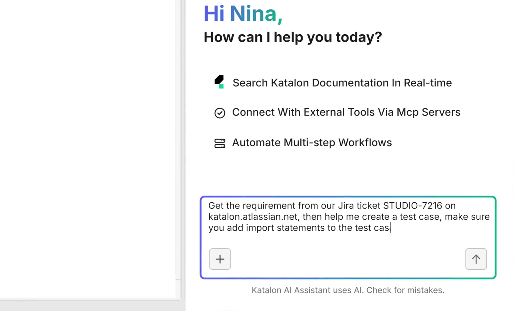
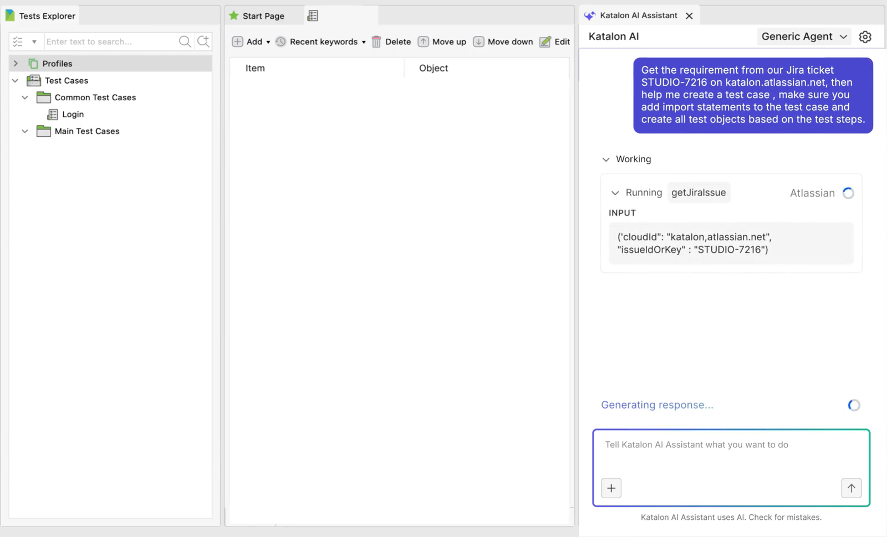

Katalon True Platform — 機能・導線・画面
確認日：2026年10月27日。全体比較・画面／動画ギャラリー
調査範囲
4製品の役割とKatalon AI・MCPを分ける。個々の利用枠・契約を1つの機能として混ぜない。
比較上の位置：テスト運用全体の直接比較。追加理由：Studio・TestOps・TestCloud・TrueTestで作成から本番行動の再利用までをつなぐため。
公式Studio操作映像・公開ページのUI例まで。製品のinstall・実行・端末・MCP接続は未実施。
作業の流れ
要求／ticket → Studio・AI作成 → TestOpsでcase・plan → TestCloud／自社runner → 結果・defect・approval → TrueTestの実利用からcoverage更新
機能の構成
StudioのTests Explorer・手順・AI Assistant、TestOpsのHome／Plans／Tests／Assets／Executions／Analytics／Device Cloud、TestCloud、TrueTest。
下表は公開説明・文書の要約。実操作した範囲は画面一覧と調査範囲に限定し、表全体を実機検証済みとはしない。
| 段階 | 画面・機能 | 入力・操作と次の行動 |
|---|---|---|
| 要求・作成 | Studio・Katalon AI | 自然言語やチケットからケース・操作・objectを作り、人がreviewする。 |
| 編集 | No-code／low-code／code | Web・mobile・API・Windowsのテスト作成・編集を案内。 |
| 管理 | TestOps | 手動・自動のケース、要求、担当者、計画と実行結果をまとめる。 |
| 準備 | Test plan・environment | 実施範囲・担当・データ・環境・起動条件を決める。 |
| 実行 | TestCloud・Runtime Engine | browser・実device・自社runnerでの実行を管理する。 |
| 結果 | Evidence・defect・readiness | stepの証拠、Jira等の不具合、承認・releaseの判断根拠を残す。 |
| 保守 | Self-healing・failure analysis | 操作対象の変更への対応と失敗説明を案内。期待保持は未評価。 |
| 再利用 | TrueTest・MCP・Playwright | 実利用からcoverage不足を拾い、既存Playwrightの結果や外部Agentも運用に接続する。 |
人の担当と比較上の着眼点
要求・生成物のreview、テストや実行の担当割当、修復とreleaseの判断。
調査者の解釈：1つのAI機能との比較ではなく、要求・資産・実行・証拠・本番知識をつなぐ運用の代替として見る。 製品性能の優劣を実証した結論ではない。
動画と見る場面
- Studio：Jira要求→object・stepの作成（17.1秒、official-product-video）。公式の掲載元。
見る場面：
2秒：AIへの依頼、
6秒：ticketの参照、11秒：case生成、15秒：生成step。


画面一覧
製品内の画面は未収録。公開説明に基づく機能表と、実際のUIを確認できた範囲を分けている。